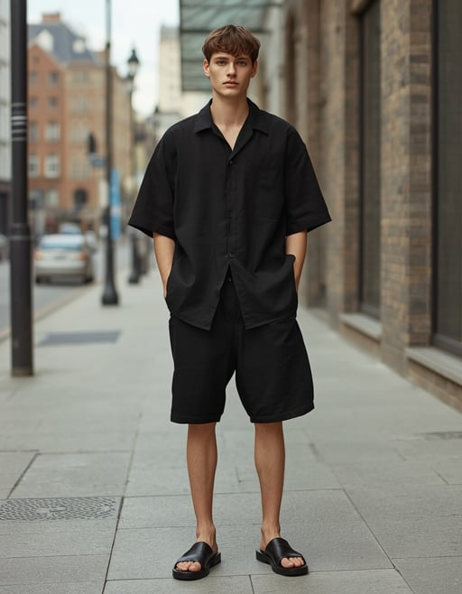

Black Outfit Ideas & Color Combinations
Black is the foundation of modern style. Here's how to wear it — beyond just head-to-toe black.
Black is the most versatile color in fashion — and it forms the foundation of minimal style as well as black minimal combinations. It's slimming, timeless, and works for literally every occasion — from a first date to a boardroom presentation. But wearing black well isn't about throwing on any black pieces you own. It's about texture contrast, silhouette balance, and intentional color pairing. This guide breaks down exactly how to build black outfits that look deliberate, not lazy.
Look 1: All-Black Everything

The Texture Play
Black cotton tee + black wool trousers + black leather sneakers. The secret to all-black is mixing fabrics — matte cotton against slick leather, soft wool against structured denim. Without texture contrast, an all-black outfit falls flat.
Wear to: casual dinner, gallery opening, travel
Key piece: black wool trousers — dress them up or down

The Layered Black
Black turtleneck + black overcoat + black slim jeans + black Chelsea boots. When every piece is black, silhouette does the heavy lifting. The overcoat creates a long vertical line; the slim jeans keep the bottom half clean.
Wear to: winter dinner, evening event
Key piece: a well-cut black overcoat
Look 2: Black + White

Clean Contrast
White button-down + black trousers + white sneakers. The highest-contrast pairing in fashion. It reads as intentional, polished, and impossibly clean. The key is keeping the white piece truly white — not off-white or dingy.
Wear to: brunch, casual office, weekend errands
Key piece: a crisp white oxford shirt

Reverse Contrast
Black knit sweater + white wide-leg pants + black loafers. Flipping the expected black-bottom-white-top formula creates visual interest. The white pants become the statement piece; the black top anchors the look.
Wear to: creative office, lunch date
Key piece: well-fitted white trousers
Look 3: Black + Accent Color

Black + Beige
Black trousers + beige crewneck sweater + white tee underneath. The warm-cool contrast makes this combination naturally balanced. Beige softens black's severity; black gives beige structure.
Wear to: coffee date, casual Friday
Key piece: a quality beige knit

Black + Navy Blue
Black jeans + navy overshirt + grey tee. Dark-on-dark feels sophisticated without trying. The trick: make sure the navy piece is clearly blue, not "is that black or navy?" ambiguous — otherwise it looks like a mismatched black.
Wear to: dinner, evening social
Key piece: a navy overshirt or chore jacket
Best Colors to Wear With Black
Safe Bets
- White — maximum contrast, never fails
- Grey — tonal, sophisticated
- Beige / Camel — warm contrast
- Navy — dark-on-dark elegance
Bold Moves
- Red — statement, night out
- Olive Green — military-inspired
- Burgundy — rich, fall/winter
- Cream — softer than pure white
Avoid
- Brown — can look muddy
- Dark purple — reads as black from distance
- Neon anything — competes with black's depth
Black by Style


Black Outfits by Scenario
Date Night
Black turtleneck + black slim jeans + Chelsea boots. All-black reads as intentional and confident on a date. Add a silver watch as the only non-black accent. Avoid logos or graphics — keep it smooth and clean.
Office / Work
Black blazer + white shirt + black straight trousers + black oxfords. The white shirt breaks the all-black while keeping it professional. Swap the blazer for a fine-gauge knit on casual Fridays.
Coffee Run / Daily
Black tee + grey or black jeans + black sneakers. This is the 2-minute outfit that always works. Grey denim keeps it from feeling too heavy; black denim makes it sharper. Either works.
Wearing Black for Your Body Type
Slim / Lean Build
Use black to create structure. Layered pieces (overshirt over tee, jacket over hoodie) add visual weight to a slim frame. Avoid skin-tight all-black — it can make a lean build look narrower. Go for relaxed fits in heavier fabrics like wool and heavyweight cotton.
Athletic / Broad Shoulders
Black naturally streamlines an athletic frame. Well-fitted (not tight) black tops show your shape without adding bulk. Straight-leg black trousers balance broad shoulders. Avoid cropped jackets — they can make your upper body look disproportionate.
Plus / Stocky Build
Black is the best color for a lengthening effect. Go monochrome all-black with vertical lines (open jacket, v-neck, unbuttoned overshirt) to create one continuous vertical line. Avoid horizontal color breaks at the waist — they cut your silhouette in half.
Petite / Shorter Frame
Monochrome black from head to toe creates an unbroken line that makes you appear taller. Avoid cropped pants — go for full-length trousers. Tuck in your top to raise the visual waistline. Black shoes with black pants extend the leg line further.
Black Through the Seasons
Spring / Fall
Black's best seasons. A black light jacket or trench + white tee + black chinos is the uniform. Cool enough for layers, warm enough to skip the heavy coat. Add a beige or grey layer for tonal depth.
Summer
Black linen shirt + black relaxed shorts + black sandals. Linen is non-negotiable — cotton traps heat and looks heavy. Keep fits relaxed, fabrics breathable. Black works in summer if the fabric is right and the cut allows airflow.
Winter
Black overcoat + black turtleneck + black wool trousers + black boots. Head-to-toe black in winter is a power move. Mix wool, cashmere, and leather for texture contrast. The layers trap warmth while the monochrome keeps you looking sharp.
FAQ — Black Outfit Questions Answered
What colors go best with a black outfit?
White, grey, beige, and camel are the safest and most versatile colors to pair with black. For bolder combinations, try burgundy, olive green, or navy blue. Avoid brown (can look muddy with black) and neon colors (compete with black's depth rather than complement it).
Can you wear all black in summer?
Yes — if the fabric is right. Choose linen, lightweight cotton, or breathable blends. Keep fits relaxed and avoid skin-tight black pieces in the heat. A black linen shirt worn open over a white tank, with relaxed black shorts, is a proven summer black outfit formula.
Is an all-black outfit too much for everyday?
No — all-black is one of the most versatile everyday looks. The key is mixing textures (matte cotton tee + smooth leather sneakers + soft wool trousers) so the outfit has depth. Without texture contrast, all-black can look flat. With it, it's effortless.
How do I style black for a date night?
A black turtleneck or silk-blend shirt with black slim trousers and Chelsea boots. Add one silver accessory — a watch or ring, not both. The monochrome reads as confident without trying too hard. Avoid graphics and oversized logos.
What shoes go with a black outfit?
Black leather derby shoes, Chelsea boots, or minimal black sneakers are the top three. For all-black outfits, match the shoe color to the pants to extend the leg line. White sneakers create a strong contrast point — use them intentionally when you want the shoes to be the focal point.
Does wearing black make you look thinner?
Yes. Black absorbs light and reduces visible shadows, creating a slimming, elongating effect. A monochrome all-black outfit creates one unbroken vertical line from head to toe — the most lengthening silhouette in fashion. This is why black has been a staple for centuries.
How do I avoid looking boring in all black?
The secret is texture contrast. Pair matte pieces (cotton, wool) with smooth pieces (leather, silk). Mix heavy fabrics with light ones. Add structure through tailoring. A black leather jacket over a black cotton tee over black wool trousers — three textures, one color, zero boredom.
Can I wear black to a wedding or formal event?
Yes. A well-tailored black suit or black dress with minimal accessories is standard formal wear. For weddings, check the dress code — black is universally accepted for evening and black-tie events. For daytime formal, break the black with a white or light-colored accessory.
← Outfit Style System Overview — the complete decision framework.